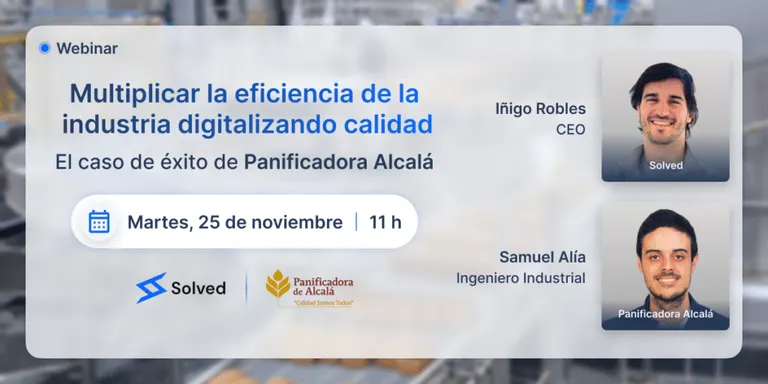

Cómo auditar a tus proveedores de calidad

La auditoría de proveedores de calidad es un proceso indispensable para cualquier fábrica que busque mantener la solidez de su cadena de suministro y cumplir con las exigencias normativas internacionales. En un mercado globalizado, donde las materias primas y los insumos provienen de distintos países y donde los clientes son cada vez más exigentes, contar con proveedores confiables y auditados se convierte en un factor de supervivencia y competitividad.
No se trata únicamente de evaluar si un proveedor entrega a tiempo o respeta los contratos. Auditar significa examinar a fondo cómo trabajan, qué controles aplican, cómo gestionan la trazabilidad de los productos y si cumplen con estándares reconocidos como ISO 9001, ISO 14001, ISO 22000, IFS o BRCGS. Este nivel de control garantiza que lo que llega a la fábrica cumple los requisitos de calidad y seguridad que los clientes finales demandan.
En este artículo veremos qué es una auditoría de proveedores, por qué es tan relevante para las fábricas, cuáles son los pasos clave para llevarla a cabo, qué retos suelen aparecer y cómo la digitalización está transformando la auditoría proveedores calidad en un proceso más ágil y eficaz.
Qué es una auditoría de proveedores de calidad
La auditoría de proveedores de calidad es una revisión sistemática y documentada que se realiza a los socios de la cadena de suministro con el objetivo de verificar que cumplen con los criterios de calidad, seguridad, sostenibilidad y cumplimiento normativo exigidos por la fábrica.
En la práctica, implica revisar:
- Procesos de producción del proveedor.
- Gestión documental: certificados, registros, procedimientos.
- Sistemas de trazabilidad de materias primas y productos terminados.
- Cumplimiento de normas internacionales como ISO, IFS o BRCGS.
- Controles de seguridad y medio ambiente.
El objetivo no es penalizar, sino asegurar que el proveedor es capaz de entregar productos consistentes, seguros y conformes a lo pactado.

Por qué es importante auditar a los proveedores
Las fábricas suelen enfocarse en sus propios procesos internos de calidad, pero olvidan que la cadena comienza fuera de sus instalaciones. Una materia prima defectuosa puede arruinar un lote completo de producción o incluso provocar una crisis sanitaria. Por eso, la auditoría proveedores calidad es tan crucial.
Riesgos de no auditar proveedores
- Incidencias en producción: materias primas defectuosas generan paradas o reprocesos.
- Problemas en auditorías externas: si el proveedor no cumple con normas, la fábrica puede perder certificaciones.
- Costes elevados: devoluciones, reclamos, desperdicios.
- Daños a la reputación: en sectores como el alimentario, un fallo de un proveedor puede acabar en retirada de productos del mercado.
Beneficios de auditar proveedores
- Garantía de cumplimiento normativo en toda la cadena.
- Reducción de riesgos operativos y legales.
- Mayor confianza de clientes y socios comerciales.
- Relación estratégica con proveedores, basada en la mejora continua.
La auditoría no es un control externo aislado, es una herramienta para fortalecer la competitividad global de la fábrica.
Tipos de auditoría de proveedores
Dentro del marco de la auditoría de proveedores de calidad, existen varios enfoques según los objetivos:
- Auditoría inicial o de homologación: se realiza antes de trabajar con un nuevo proveedor para asegurarse de que cumple con los requisitos mínimos.
- Auditoría periódica: revisiones programadas a proveedores activos para comprobar que mantienen los estándares.
- Auditoría de seguimiento: tras detectar no conformidades, se revisa que las acciones correctivas se hayan aplicado correctamente.
- Auditoría de cumplimiento normativo: se enfoca en verificar que el proveedor cumple con regulaciones locales e internacionales.
Cada tipo responde a una necesidad distinta, pero todos buscan reforzar la fiabilidad de la cadena de suministro.
Pasos para realizar una auditoría de proveedores de calidad
Una auditoría proveedores calidad eficaz debe seguir un proceso estructurado. Estos son los pasos fundamentales:
1. Definir criterios de evaluación
Antes de auditar, la fábrica debe establecer los parámetros que evaluará. Estos pueden basarse en:
- Normas ISO 9001, ISO 22000, IFS, BRCGS.
- Requisitos contractuales específicos.
- Indicadores de sostenibilidad o medio ambiente.
2. Planificación de la auditoría
- Seleccionar al equipo auditor.
- Determinar fechas, duración y alcance.
- Comunicar al proveedor los objetivos y requerimientos.
3. Ejecución de la auditoría
- Revisión documental: certificados, procedimientos, registros.
- Visita a las instalaciones: observar procesos, higiene, seguridad.
- Entrevistas con el personal: comprobar nivel de formación y cultura de calidad.
- Verificación de trazabilidad: seguir un lote desde materia prima hasta producto final.
4. Registro de hallazgos
Cada observación debe documentarse con evidencia objetiva: fotografías, documentos, registros, entrevistas.
5. Informe final
El informe debe incluir:
- Conformidades.
- No conformidades mayores y menores.
- Recomendaciones de mejora.
6. Plan de acciones correctivas
El proveedor debe presentar un plan con responsables, plazos y medidas concretas para corregir los fallos detectados.
7. Seguimiento
La auditoría proveedores calidad no termina con el informe. Es clave realizar un seguimiento para asegurar que los cambios se implementen.
Estándares internacionales más relevantes en la auditoría de proveedores
En una auditoría de proveedores de calidad, los marcos de referencia más comunes son:
- ISO 9001 (gestión de calidad): exige procesos documentados y mejora continua.
- ISO 14001 (gestión ambiental): evalúa impacto ambiental y cumplimiento legal.
- ISO 22000 (seguridad alimentaria): establece la trazabilidad y control de peligros.
- IFS (International Featured Standards): muy exigido en la cadena de distribución europea.
- BRCGS (Brand Reputation Compliance Global Standard): garantiza seguridad y confianza en productos.
Cada norma aporta requisitos específicos que deben verificarse durante la auditoría.
Retos comunes en la auditoría de proveedores
Aunque la auditoría proveedores calidad es fundamental, también enfrenta dificultades:
- Resistencia de proveedores a ser auditados.
- Falta de recursos internos para realizar auditorías periódicas.
- Exceso de documentación manual.
- Dificultad para consolidar evidencias de forma rápida y clara.
Superar estos retos exige preparación, cultura de colaboración y apoyo en herramientas tecnológicas.
Digitalización: el futuro de la auditoría de proveedores
La digitalización está transformando la auditoría proveedores calidad en un proceso más ágil y fiable. En lugar de depender de papeles, carpetas y correos electrónicos dispersos, las fábricas pueden:
- Usar checklists digitales personalizables.
- Capturar evidencias en planta con fotos y vídeos en tiempo real.
- Compartir informes automáticos con proveedores de forma inmediata.
- Centralizar históricos de auditorías en una plataforma segura.
- Reducir tiempos de preparación hasta en un 70%.
La diferencia es clara: mientras un sistema manual genera ineficiencia y errores, la digitalización aporta trazabilidad y confianza.
Cómo Solved facilita la auditoría de proveedores
La plataforma Solved ha sido diseñada para simplificar todos los procesos relacionados con la auditoría de proveedores de calidad. Algunas de sus funcionalidades clave son:
- Checklists digitales adaptables a ISO, IFS y BRC.
- Registro de incidencias y hallazgos en tiempo real.
- Evidencias digitales (fotos, vídeos, documentos).
- Acciones correctivas asignadas automáticamente con responsables y plazos.
- Dashboards de seguimiento que permiten ver el estado de las auditorías y las no conformidades abiertas.
Con Solved, las fábricas pueden pasar de auditorías lentas y manuales a procesos ágiles, colaborativos y listos para cualquier certificación.
Conclusión
La auditoría de proveedores de calidad no es un trámite burocrático: es la herramienta que asegura que toda la cadena de suministro opera con los mismos niveles de exigencia que la fábrica aplica a sí misma. Auditar proveedores significa reducir riesgos, garantizar cumplimiento normativo y fortalecer la confianza con clientes y mercados.
El futuro de estas auditorías pasa por la digitalización. Con herramientas como Solved, las empresas logran trazabilidad completa, informes automáticos y colaboración fluida con proveedores. Así, la auditoría deja de ser un gasto de tiempo y se convierte en una ventaja competitiva.
¿Quieres auditar a tus proveedores de manera más ágil y asegurar cumplimiento normativo en toda tu cadena de suministro? Solicita una demo de Solved y descubre cómo transformar tu auditoría proveedores calidad en un proceso eficiente y digital.